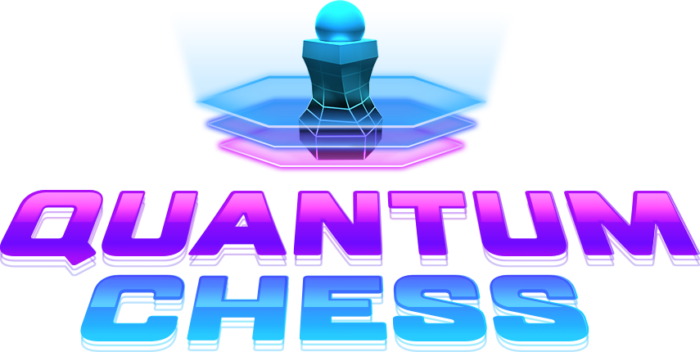
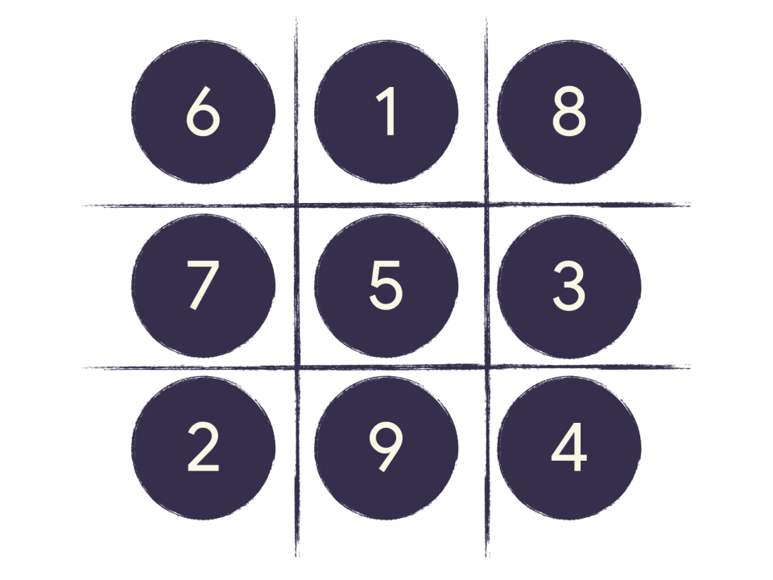
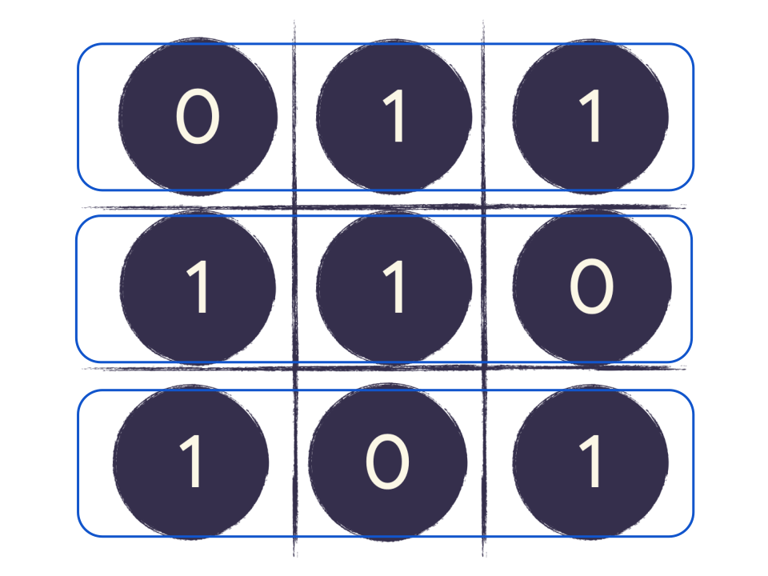
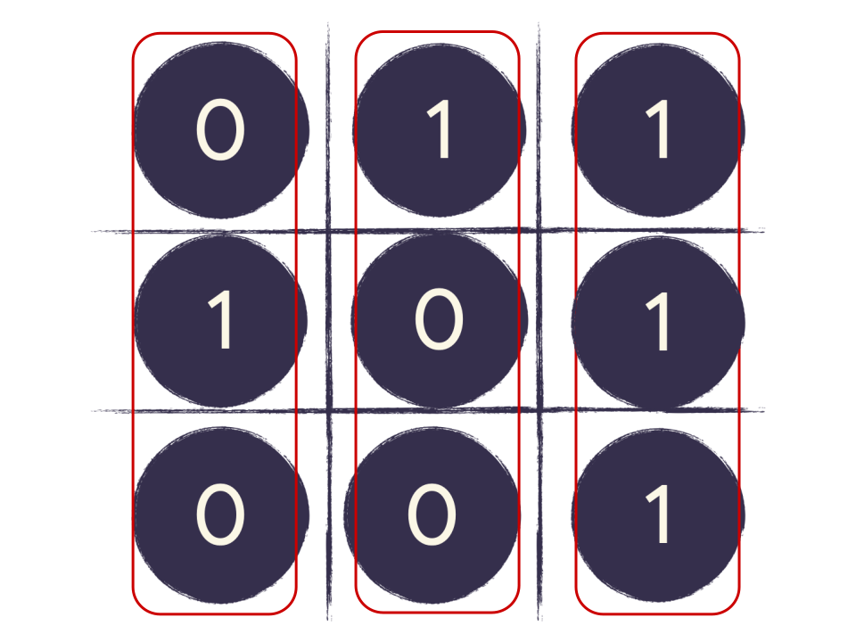
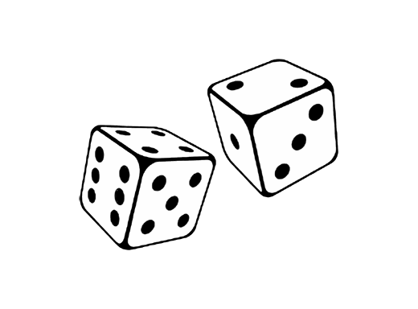
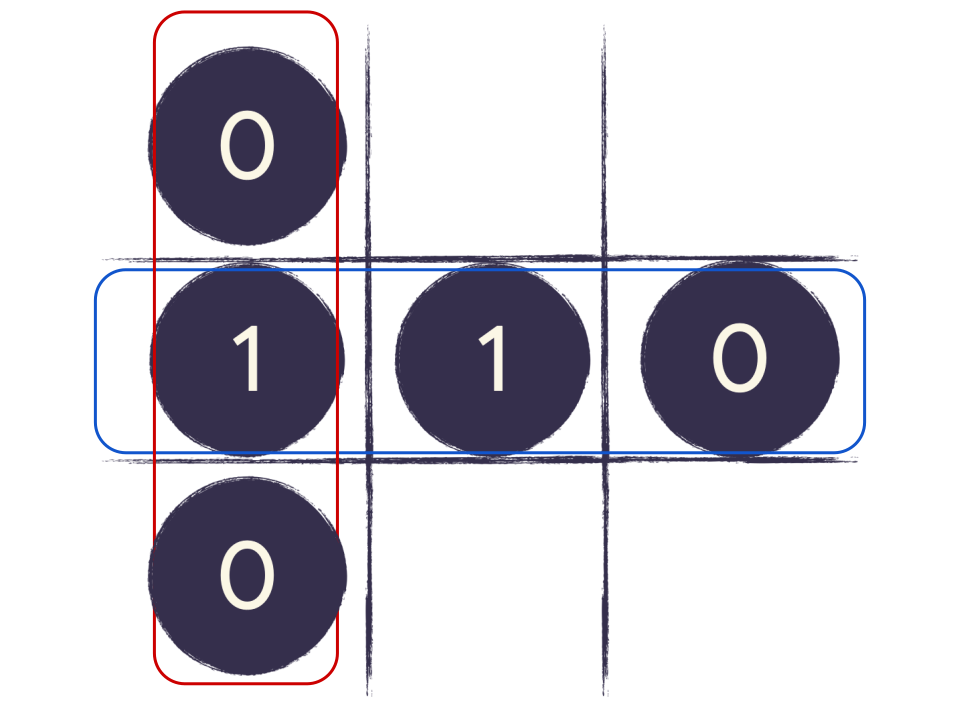
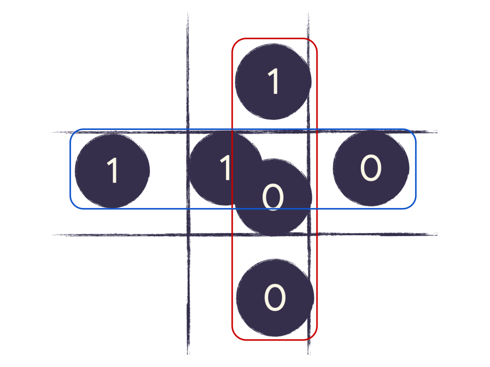
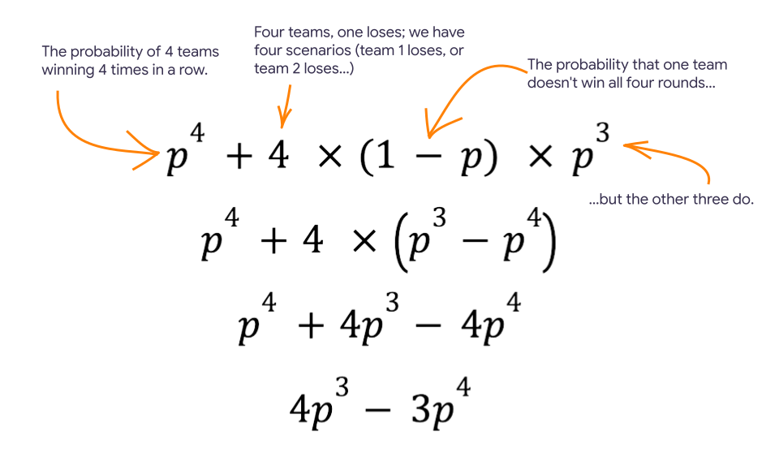

Lessons
The following lessons include resources for instructors from all backgrounds to introduce their students to quantum physics through game play. The activities are independent, so you can use either activity, or both, in any order. We recommend that you start with the Quantum Chess puzzles.
Quantum Chess
Jump to the Quantum Chess activity.
The Quantum Chess activity helps students build an intuition about quantum information science concepts. The chess board gives students a physical object that they can imagine while trying to understand states, probabilities, and interactions across states.
Use this activity to ground your discussion about how information is encoded, stored, and transmitted in a quantum system.
Zeros and Ones (Quantum Magic Square)
Jump to the Zeros and Ones activity
The Zeros and Ones activity is a social, collaborative game where the students work together to overcome the mathematical odds. This activity emphasizes the limitations of classical physics of systems: an optimal strategy only enables a win ratio of 8/9. However, if the students have access to a quantum computer, the win ratio grows to 100%.
Use this activity to motivate your discussion about how quantum systems enable new ways to transmit and capture information.
Learning objectives
Students communicate that a quantum system can express the relationships between multiple configurations of classical, single-state systems (coins are either heads or tails, physical chess pieces are either on the board or not).
This is a feature of the real world as well, hidden from us until recently. Researchers at labs around the world are now learning how to create and wield quantum phenomena at our everyday, macroscopic scales. This work is the foundation for a new kind of super-powerful computer, quantum computers.
Standards alignment
For teachers in the United States, you should find that these lessons align with the Next Generation Science Standards :
- MS-PS4-3: Integrate qualitative scientific and technical information to support the claim that digitized signals are a more reliable way to encode and transmit information than analog signals.
- HS-PS4-2: Evaluate questions about the advantages of using digital transmission and storage of information.
- HS-PS4-5: Communicate technical information about how some technological devices use the principles of wave behavior and wave interactions with matter to transmit and capture information and energy.
Both lessons aim to help students build an intuition about using quantum systems to reason about the encoding and transmission of digital information.
General introduction to Quantum Physics
You can use this script before the first lesson:
"Today we are going to explore an exciting branch of physics called Quantum physics. Quantum physics usually deals with things that are very very small, like particles and atoms. This level is called the Quantum Realm. Things are different down at that level. One amazing aspect of the Quantum Realm is that it predicts the existence of many parallel universes, where things can be very different from our universe. For example, there may be a universe in which dinosaurs still roam the Earth, or even ones in which time travel and teleportation have already been developed."
"The idea that we may be living in just one of many universes - a multiverse - may sound unbelievable, like something out of science fiction. Still, it’s something that many quantum physicists believe to be true, and are currently researching."
"If you’ve heard of the Marvel superhero Ant Man, then you’ve already been introduced to the Quantum Realm! Ant Man wears a special suit that allows him to enter the Quantum Realm and harness its power. Indeed, current research has revealed deep connections between fundamental aspects of the Quantum Realm and the nature of space and time."
"In fact, scientists at universities like Caltech and companies like Google, are looking for ways to manifest the powers of the Quantum Realm at the human scale. This would open a world of possibilities for the future of science and humanity, and we’re going to learn more about it today!""
Lesson: Quantum Chess
Run this activity
- Go to the guided Quantum Chess puzzles
- Present the slides
- Choose a conclusion (info below, slides ).
You can use the following script to introduce your class to Quantum Chess puzzles. The in-puzzle character will do the rest.
"Raise your hand if you have played chess before or seen Queen’s Gambit?"
"Today, our friends at Caltech, Google, and Quantum Realm Games are going to teach us how to play a version of chess with a Quantum twist! Through the game we will learn more about how things work at the Quantum Realm."
"We'll learn about a concept called quantum superposition , which is when something can exist in multiple states at the same time."
"We will also learn about another amazing power hiding within the quantum realm: quantum entanglement . Quantum entanglement is so powerful, it is thought to connect all of space and time, including how the multiverse itself may be stitched together."
"When you go to this link on your device, you will be directed through a series of puzzles. These puzzles apply the laws of quantum physics to the classic game of chess. You don’t need to know how to play chess to enjoy the game."
Lesson: Zeros and Ones (Quantum Magic Square)
Zeros and Ones (a quantum Magic Square game) offers students a chance to understand the limitations of classical physics, and improve their chances at winning a game by using Quantum Information Science as an analytic tool. This activity highlights the limitations of classical systems analysis.
Run this activity
- Before class: print game sheets.
- Project the presentation slides.
- Play the pre-recorded facilitator (slide 3).
- Choose a conclusion (below).
Agenda
- Introduction: (5 mins) - See language provided on our Quantime website.
- Play the game: (25 min) - An engaging full-class activity that builds excitement around quantum and fosters collaboration among students.
- Strategy: (5-10 min) - Students explore the best classical strategy to win the game. They learn that winning the game becomes exponentially harder with each additional round.
- Quantum connection: (10-15 min) - Students 1.) revisit the Zeros and Ones game through an animation that recasts the game’s strategy in a quantum light, and 2.) a video presenting some of the amazing, real world applications of quantum computers.
| Section | Time (minutes) | Description |
|---|---|---|
| Introduction | 5m | This activity demonstrates the power of two important concepts in Quantum physics: quantum superposition and quantum entanglement . These two concepts are be responsible for everything we see in the Quantum Realm. |
| Play the game | 25m | An engaging full-class activity that builds excitement around quantum and fosters collaboration among students. |
| Strategy | 5-10m | Students explore the best classical strategy to win the game. They learn that winning the game becomes exponentially harder with each additional round. |
| Quantum connection | 10-15m | Students 1.) revisit the Zeros and Ones game through an animation that recasts the game’s strategy in a quantum light, and 2.) a video presenting some of the amazing, real world applications of quantum computers. |
Overview for the instructor
In a standard Magic Square game, a player is given 9 numbers and a 3 by 3 grid. The task is to fill in the grid with the numbers so that all rows, columns, and diagonals sum to a single number. Solutions exist to solve the Magic Square.
In the Quantum Magic Square game, the goal is for two groups to coordinate the placement of the numbers 1 and 0 in their column and row, in a pattern so that both groups choose the same number where the one's row and the other's column intersect.
The Blue group must populate the rows of the grid with an even number of ones. The Red group must populate the columns with an odd number of Zeros.
|

Three rows that meet the requirements for Zeros and Ones: 011, 110, 101.
|

Three columns that meet the requirements for Zeros and Ones: 010, 100, 111.
|
|

A pair of rolling dice
|
|
|

A winning play for the team, where the second row and first column were assigned. The Blue group chose 110, and the Red group chose 010. The row and column both have the number 1 at the intersection
|

A losing play for the team, where the second row and second column were assigned. The Blue group chose 110 and the Red group chose 100. The row and column have different numbers at the intersection.
|
The dice introduce an element of chance that makes the Zeros and Ones game unwinnable if the game is played repeatedly.
However, if the students had access to a quantum system (like a quantum computer, or some other kind of "entangled qubit"), the quantum magic square game is winnable every time.
In this game, the class divides into four teams, each with two groups. A pre-recorded facilitator guides the entire class through the process.
Introduction
If this is their first lesson, you can say:
"Today our goal is to understand the power of two important concepts in Quantum physics: quantum superposition and quantum entanglement . These two concepts are be responsible we see in the Quantum Realm. We’re going to start by playing a game together. It’s a fairly simple game called Zeroes and Ones. I’m going to play a video so all you need to do is follow along.""
If they’ve already done the chess puzzles lesson, you can say:
"In the previous lesson, you learned about quantum superposition and quantum entanglement through the game of quantum chess. Remember: quantum superposition is when something can exist in multiple states at the same time. Today we are going to continue to see the power of superposition and entanglement through another game that we’re all going to play together.""
Game play
Before you begin: Print at least one set of game play sheets for each team.
The pre-recorded facilitator leads the class through the following steps:
Strategy reflection
Jump to the:
To win the game, every row needs an even number of 1s and every column needs an odd number of 1s. However, there's always one square that can't be filled in without breaking the rules. This means that there is only an 8/9 chance of winning any given round, or about 89%.

We can write the probability for any one team winning four rounds in a row:
Or, more generally, for winning n games in a row:
Now we can write the probability of at least three groups winning all four rounds:
Earlier, we calculated that the probability of winning all four rounds was $$\left( \frac{8}{9} \right)^4$$, so substituting that into our equation:
As we build machines that enable us to engage with the quantum realm, like quantum computers, we can play this game in a way where we win 100% of the time. For this game, we need a device with six qubits that we can entangle.
This video following video describes how we can use these qubits to win the game.
Conclusion
Below are some suggested resources that you can use to close your lesson:
Practical applications
This outro is about connecting the quantum concepts the students learned about to the real world. Before leading this workshop, feel free to watch all of the videos and decide which would be most appropriate for your class, or ask the class to choose! We love them all so we couldn’t choose just one!
- What if we had working quantum computers today? (5:03)
- Quantum Computers Explained - Limits of Human Technology (6:45, can start at 3:45 if too long)
- How Quantum Computing Will Change the World (3:37)
Quantum in Hollywood
This video pits actor Paul Rudd (Marvel’s Ant Man) against theoretical physicist Stephen Hawking playing each other in an epic game of quantum chess.
This video can be watched after either lesson but we recommend showing it after the students have been introduced to the chess puzzles. It’s a bit long but serves as a fun note to end on. If there is not enough time, we recommend sending the link home with your students so they can watch it on their own time!
If the students are not familiar with Ant Man, explain that he is a Marvel superhero that has a special suit that makes him extremely tiny, allowing him to enter a tiny universe called the Quantum Realm. If the students are not familiar with Stephen Hawking, explain that he is a famous theoretical physicist, who tried to figure out the Theory of Everything - how gravity works at the quantum level.
Find out more
Our classroom time with quantum physics is coming to an end but hopefully this was an exciting introduction to the quantum world.
There is so much more to learn about this topic that we weren’t able to cover in this lesson. The study of quantum physics is vast and ever-growing, and if you’d like to continue your journey with it, there are many ways:
- Explore the Quantum Chess playground
- Learn More about Quantum Science:
- Play more quantum chess (either website or give access to quantum realm version)
- On the same website that we used to play the quantum chess puzzles , you can find more resources to learn about quantum science.